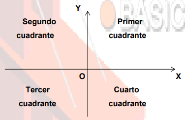
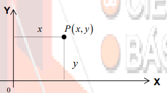
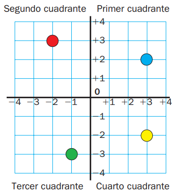

Concepto
El sistema de coordenadas cartesianas en el plano está constituido por dos rectas perpendiculares que se intersecan en un punto “O” al que se le llama “el origen”. Una de las rectas se acostumbra representarla en posición horizontal y se le da el nombre de eje X o eje de las abscisas; a la otra recta, vertical, se le denomina eje Y o eje de las ordenadas, y ambas constituyen los dos ejes de coordenadas rectangulares, los cuales dividen al plano en cuatro partes llamadas cuadrantes.
En este sistema de coordenadas, la posición de un punto P en el plano queda determinada mediante una pareja de números reales (x, y) de los cuales el primero, x, representa la distancia del punto P al eje coordenado Y, en tanto que el segundo, y, representa la distancia del punto P al eje X. Esto se representa en la forma:

La distancia de un punto al eje Y se le llama abscisa del punto, la distancia de
un punto al eje X se le llama ordenada del punto.
Las abscisas (valores de x) son positivas en el primero y en el cuarto
cuadrante, en tanto que son negativas en el segundo y en el tercer cuadrante.
Las ordenadas (valores de y) son positivas en el primero y en el segundo
cuadrante, en tanto que son negativas en el tercero y en el cuarto cuadrante.
Las abscisas son nulas (x = 0) para todos los puntos contenidos en el eje Y.
Las ordenadas son nulas (y = 0) para todos los puntos contenidos en el eje X.
Para representar puntos de coordenadas conocidas se trazan los ejes de
coordenadas y se establece una escala adecuada sobre cada uno de ellos.
Dichas escalas pueden ser iguales o distintas.
Ejemplos
Diego ha representado varios puntos en los ejes de coordenadas cartesianas.
Observa los dos ejes:Las coordenadas cartesianas de los puntos son:
Fíjate en que las coordenadas de cada punto son positivas o negativas según el cuadrante en el que se encuentre.
Ejercicios
Instrucciones:
Referencia
Almodóvar, J. A., Rodríguez, M. (2009). MATEMATICAS 6 PRIMARIA LA CASA DEL SABER SANTILLANA. España: Santillana Educación, S.L..
SISTEMA DE COORDENADAS CARTESIANAS. (2011, abril). unam.mx. http://dcb.fi-c.unam.mx/CoordinacionesAcademicas/Matematicas/CapsulasAntecedentes/simetria.pdf